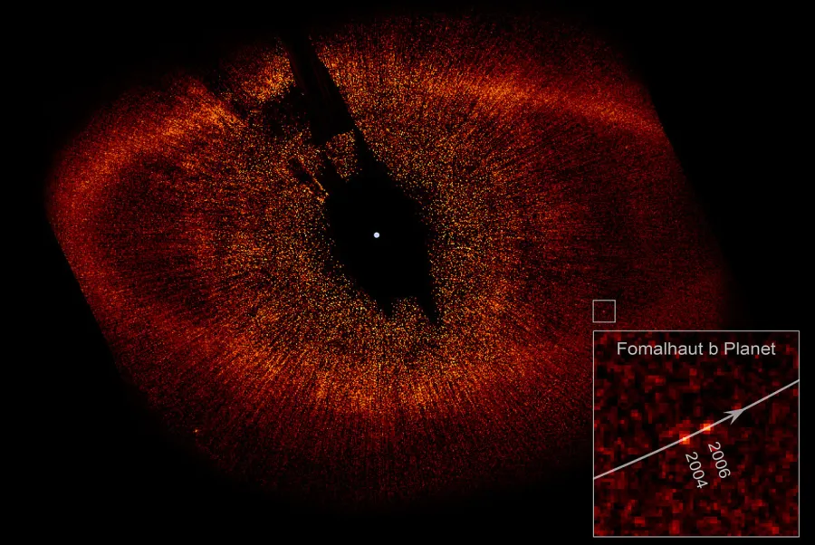

13. November 2008
Fomalhaut b: vom fotografierten Planeten zur Staubwolke
Im November 2008 meldete ein Hubble-Team die erste Aufnahme eines Planeten im sichtbaren Licht: Fomalhaut b, höchstens drei Jupitermassen schwer, knapp innerhalb des Staubrings um den 25 Lichtjahre entfernten Stern Fomalhaut. Aus Aufnahmen von 2004 und 2006 errechnete man eine Umlaufzeit von 872 Jahren.
Später verblasste das Objekt, auf Hubble-Bildern von 2014 war es verschwunden. Eine 2020 vorgestellte Analyse deutet es als sich ausdehnende Staubwolke nach dem Zusammenstoß zweier etwa 200 Kilometer großer Körper. 2025 fand Hubble in der Nähe eine zweite solche Wolke. Fomalhaut b gilt daher nicht mehr als Planet.
Quellen: ESA/Hubble: "Hubble directly observes planet orbiting Fomalhaut", 13.11.2008; ESA/Hubble: "Hubble Observes Aftermath of Massive Collision", 20.04.2020; ESA/Hubble: "Hubble sees asteroids colliding at nearby star for first time", 18.12.2025